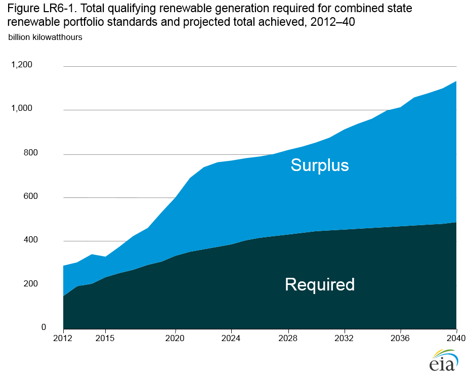

State RPS programs
Release Date: 9/15/2016
To the extent possible, AEO2016 reflects state laws and regulations in effect at the end of December 2015 that mandate levels of renewable generation or capacity for utilities doing business in the state. These mandates are known as renewable portfolio standards (RPS) requirements. The AEO2016 projections do not include laws and regulations with either voluntary goals or targets that can be substantially satisfied with nonrenewable resources. In addition, the projections do not account for fuel-specific provisions—such as those for solar and offshore wind energy—as distinct targets. Where applicable, such distinct targets (sometimes referred to as tiers, set-asides, or carveouts) are subsumed into the broader targets, or they may not be included in the model because they are related to nonutility-scale generation.
The AEO2016 Reference case assumes that states will meet
their ultimate RPS targets, but not necessarily targets for
interim years. RPS compliance constraints in most regions are
approximated, however, because NEMS is not a state-level
model, and each state generally represents only a portion of one of the NEMS electricity regions. In general, EIA has confirmed requirements for each state through original legislative or
regulatory documentation, and using the Database of State Incentives for Renewables & Efficiency (DSIRE) to support those
efforts [45].
At present, most states are meeting or exceeding their required levels of renewable generation, based on qualified generation or purchase of renewable energy credits [46]. A number of factors helped create an environment favorable for RPS compliance, including:
- A surge of new RPS-qualified generation capacity timed to take advantage of federal incentives, some of which were set to decline or expire at the end of 2015 or 2016 but have since been extended
- Continued reductions in the cost of wind, solar, and other renewable technologies
- EPA's recently finalized mandatory carbon dioxide reduction program (the Clean Power Plan) [47]
- Complementary state and local policies that either reduce costs (for example, equipment rebates) or increase revenue streams (for example, net metering) associated with RPS-eligible technologies
The aggregate RPS requirement for various mandatory state programs, as modeled for AEO2016, is shown in Figure LR6-1, along with total projected renewable generation. In 2025, the targets account for 40% of renewable generation and about 10% of U.S. electricity sales. However, the aggregate targets and qualifying generation shown in Figure LR6-1 may mask significant regional variation, as well as technology-specific or tier-specific shortfalls. Although some regions may produce excess qualifying generation, others may produce just enough to meet the requirement or may need to import electricity from adjoining regions to meet state targets.
figure data
One factor that could cause states to miss their RPS goals is slow or no growth in electricity demand. Reduced need for new generation would have the most significant effects on sources that are on the margin. To date, slowing demand has not been a problem, but the situation could change if demand is stagnant for an extended period of time. Implementation of EPA's CPP rule may mitigate the effects of slow demand growth on reaching RPS goals to the extent that it results in retirement of more existing coal-fired generation capacity.
Further, although there is now more qualifying generation in aggregate than needed to meet the targets, states with technologyspecific goals could still have shortages of certain technologies. Also, the projected pattern of aggregate surplus does not necessarily imply that projected generation would be the same without state RPS policies, which may encourage investment in places where it would not occur otherwise or would not occur in the amounts projected, even as other parts of the country see substantial growth above state targets or the absence of targets. The results do, however, suggest that state RPS programs will not be the sole motivation for future growth in renewable generation.
Currently, 29 states and the District of Columbia have enforceable RPS or similar laws (Table LR6-1)*(If you need this table printed see PDF version). [48]. Under such standards, each state determines its own levels of renewable generation, eligible technologies [49], and noncompliance penalties. Only one new RPS program has been enacted since 2009, but there have been a number of modifications to existing programs in recent years, building on state implementation experience and changing market conditions.
In 2014 and 2015, a large number of proposed legislative modifications were made to existing RPS programs [50, 51]—including some attempts to weaken the targets of existing programs significantly—but only a small subset were enacted. One state froze progress toward its RPS, and another state repealed its mandate. Other states increased their targets. States making major changes to their RPS programs are discussed below.
California
By raising its 2030 commitment for total renewable generation from 33% to 50% (an estimated increase of more than 40 billion kWh), California made the largest absolute increase in its RPS generation requirement in 2015. Renewable resources provided 29% of California's total generation and 22% of its retail sales in 2014. Senate Bill 350 (SB350) [52], the legislation enacting the 50% mandate, specifies that 25% of retail sales in 2016 must come from qualified renewable generation. Other interim targets are 33% by 2020, 40% by 2024, and 45% by 2027. Solar photovoltaic (PV) technology has dominated recent capacity additions, and additions of wind capacity continue to provide more generation.
Hawaii
Hawaii became the first state to establish a 100% RPS. Hawaii House Bill 623 (HB623) [53] mandates that Hawaii’s three major electrical utilities achieve 100% of sales from renewable generation by 2045. The law also specifies interim goals: 15% by 2015, 30% by 2020, 40% by 2030, and 70% by 2040. Currently, petroleum provides 68% of Hawaii’s electricity (73% of retail electricity sales). In 2014, renewable electricity accounted for 12.7% of total generation from the state’s three utilities, or 14.1% of sales. However, 12% of Hawaiian houses have rooftop PV installations, and distributed generation provided an additional 5.2% of 2014 utility-scale generation, displacing 5.6% of sales. Hawaii has severely restricted new rooftop installations because of the potential impacts of high levels of distributed generation on local distribution grids.
Kansas
Kansas converted its binding 2009 RPS into a nonmandatory goal in 2015, with the passage of Senate Bill 91 (SB91) [54]. Kansas had approved House Bill 2369 (HB2369) in 2009 [55], requiring the state’s investor-owned utilities and electric cooperatives to generate or purchase at least 20% of their peak demand from renewable resources for each calendar year beginning in 2020. Wind supplied about 22% of Kansas' net electricity generation in 2014. SB91 also provides new renewable energy facilities with a 10-year property tax exemption (assuming the facilities are not located behind the customer's utility meter) and making it easier for utilities to recover costs associated with meeting the previous mandate.
Ohio
Ohio decided in June 2014 to freeze for two years the progress toward its RPS 2024 mandate of 12.5%. Senate Bill 310 (SB310) [56] also includes renewable electricity imported from other states in its RPS determination. Current targets are for 12.5% by 2026. In-state renewables provide Ohio with less than 2% of its electricity sales.
Vermont
On June 11, 2015, Vermont passed House Bill 40 (HB40) [57], creating a requirement that 75% of retail electricity sales come from qualifying renewable generation by 2032. In doing so, it became the first state to establish a new mandatory RPS since 2009. Previously, Vermont had a nonmandatory goal of 20% by 2017. HB40 established an interim target of 55% by 2017. With the closure of the Vermont Yankee nuclear generating station in 2014, more than 90% of Vermont’s 2015 in-state generation is expected to be renewable. However, the state now imports about half of its 5.6 billion kWh in total sales. Vermont is a major port-of-entry for hydroelectric and other generation from Canada, with gross imports of nearly 11 billion kWh in 2014. Currently, much of that generation is passed through Vermont to other states.
West Virginia
In February 2015, West Virginia’s House Bill 2001 (HB2001) [58] repealed the Advanced Energy Standard, eliminating the requirement that West Virginia obtain 25% of its electricity from renewable or other advanced energy sources, such as highefficiency fossil generators. However, the state’s House Bill 2201 retains net metering for distributed solar projects. Previously, EIA did not model the Advanced Energy Standard, because the standard could be met substantively with nonrenewable generation; therefore, its repeal is not incorporated in AEO2016.
Endnotes
- For information about the Database of State Incentives for Renewables & Efficiency (DSIRE), see DSIRE, "Database of State Incentives for Renewables & Efficiency" (Raleigh, NC: not dated), http://www.dsireusa.org.
- G. Barbose, "U.S. Renewables Portfolio Standards: Overview of Status and Key Trends" (Berkeley, CA: November 2015), https://emp.lbl.gov/sites/all/files/2015%20National%20RPS%20Summit%20Barbose.pdf.
- U.S. Environmental Protection Agency, "Standards of Performance for Greenhouse Gas Emissions From New, Modified, and Reconstructed Stationary Sources: Electric Utility Generating Units" (Washington, DC: October 23, 2015) https://www.federalregister.gov/articles/2015/10/23/2015-22837/standards-of-performance-for-greenhouse-gas-emissionsfrom-new-modified-and-reconstructed-stationary; and U.S. Environmental Protection Agency, "Carbon Pollution Emission Guidelines for Existing Stationary Sources: Electric Utility Generating Units" (Washington, DC: October 23, 2015), https://www.federalregister.gov/articles/2015/10/23/2015-22842/carbon-pollution-emission-guidelines-for-existing-stationarysources-electric-utility-generating.
- Enumerations of state RPS policies may vary from source to source. The policies vary significantly from state to state, with no universal definition. Previous discussion of state RPS policies by EIA have included a policy in West Virginia that allowed for several types of fossil-fueled generators to be built instead of renewable generators to meet the portfolio requirement. That policy is not included as an RPS in AEO2016.
- Eligible technologies, and even the definitions of technologies or fuel categories, vary by state. For example, one state's definition of renewables may include hydropower, while another's may not. Table LR6-1 provides more detail on how the technology or fuel category is defined by each state.
- Colorado State University, Center for the New Energy Economy, "Summary of State Renewable Portfolio Standard Legislation in 2014" (Fort Collins, CO: August 2014), http://www.aeltracker.org/graphics/uploads/CNEE-2014-State-RPS-Legislation-Analysis.pdf.
- Colorado State University, Center for the New Energy Economy, "Summary of State Renewable Portfolio Standard Legislation in 2015" (Fort Collins, CO: April 2015), http://www.aeltracker.org/graphics/uploads/2015-Trends-in-Renewable-Portfolio-Standard-Legislation_4_15.pdf.
- California Legislative Information, "SB-350 Clean Energy and Pollution Reduction Act of 2015" (Sacramento, CA: October 7, 2015), https://leginfo.legislature.ca.gov/faces/billNavClient.xhtml?bill_id=201520160SB350.
- LegiScan, "Hawaii House Bill 623" (Honolulu, HI: June 10, 2015), https://legiscan.com/HI/text/HB623/2015.
- Legislature of the State of Kansas, "House Substitute for Senate Bill No. 91: Renewable energy standards act and property tax exemptions for renewable energy resources" (May 28, 2015), http://www.kslegislature.org/li/b2015_16/measures/documents/sb91_enrolled.pdf.
- Legislature of the State of Kansas, "Senate Substitute for House Bill No. 2369: Energy, generation, transmission, and efficiency" (May 22, 2009), http://www.kansas.gov/government/legislative/bills/2010/2369.pdf.
- M. McClelland, Ohio Legislative Service Commission, "Sub. S.B. 310, Bill Summary, Renewable energy and advanced energy requirements" (May 7, 2014), http://www.lsc.ohio.gov/analyses130/s0310-rh-130.pdf.
- Vermont General Assembly, "H.40, An act relating to establishing a renewable energy standard and energy transformation program" (May 15, 2015), http://legislature.vermont.gov/bill/status/2016/h.40.
- West Virginia Legislature, "H.B. 2001, Article 2F. Alternative and Renewable Energy Portfolio Standard" (Charleston, WV: January 14,
2015), http://www.legis.state.wv.us/Bill_Status/bills_text.cfm?billdoc=hb2001%20intr.htm&
yr=2015&sesstype=RS&i=2001.